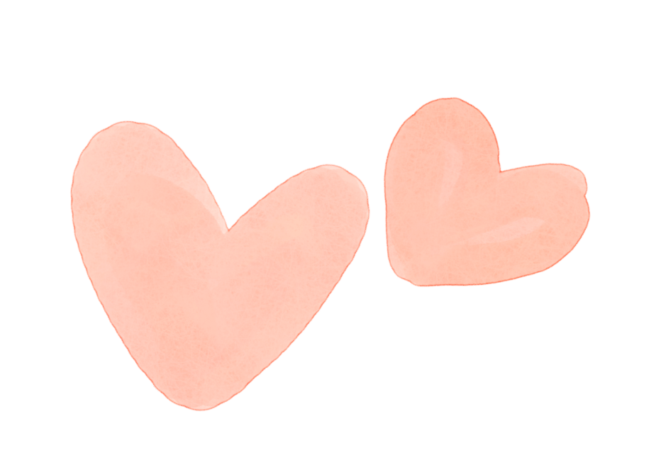

STATEMENT
Alexis Macias
Within the past four months, I have had to create work outside of my comfort zone. I’ve done work in different mediums that I have never used before. So far, I have worked with audio, video, html, css, processing, photoshop, illustrator, and photography. Within all of these assignments I had been given, and some of my own, I can see a pattern of emotion as a theme. Within the majority of my work, there is always some type of emotion or feeling I am trying to communicate. I feel that people connect with others through emotion which makes it easier for people to relate to a certain work. I try to keep things simple within my work, depending on the assignment. I feel that a more minimalistic look is straight and to the point while also being creative with lines. I feel this the most when i’m designing or working with photography.
Bringing up an example that I feel connects with my emotions the most is my composite piece called “Emotions”. This piece represents myself and all the different emotions I am feeling on the inside while, in the background, we see a calm lake, which represents my calm attitude on the outside. I felt that many people can relate to this piece because the majority of people are feeling something different than what they portray on the outside. There is another connection in this piece and that is to my son. I have had rough time to get to where I am today and I always try to incorporate a little piece of myself in my work, if it calls for it.
